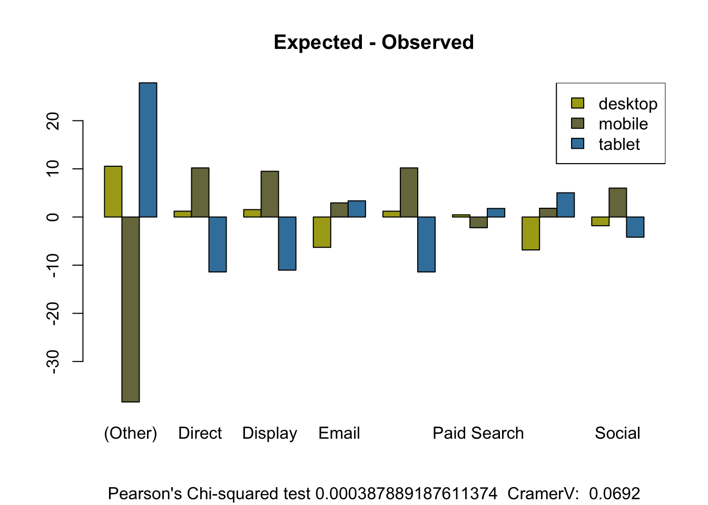

readxl is recommended as the best way to read in data. You can also use the Import Dataset button in RStudio that will help you set options and write the readxl code for you:
all_data <- readxl::read_excel("data/day2/SampleGA2 for R Mark.xlsx")
## we only want these columns
all_data <- all_data %>%
select(date, deviceCategory, channelGrouping, Sessions, GoalCompletions, DeviceClass, ChannelClass)
knitr::kable(head(all_data))| date | deviceCategory | channelGrouping | Sessions | GoalCompletions | DeviceClass | ChannelClass |
|---|---|---|---|---|---|---|
| 2016-01-01 | mobile | (Other) | 186 | 0 | 2 | 1 |
| 2016-01-01 | tablet | (Other) | 80 | 0 | 3 | 1 |
| 2016-01-01 | desktop | Direct | 744 | 4 | 1 | 2 |
| 2016-01-01 | mobile | Direct | 4491 | 21 | 2 | 2 |
| 2016-01-01 | tablet | Direct | 611 | 4 | 3 | 2 |
| 2016-01-01 | desktop | Display | 18174 | 63 | 1 | 3 |
summary(all_data)## date deviceCategory channelGrouping
## Min. :2016-01-01 00:00:00 Length:7162 Length:7162
## 1st Qu.:2016-04-04 00:00:00 Class :character Class :character
## Median :2016-07-09 00:00:00 Mode :character Mode :character
## Mean :2016-07-05 04:48:07
## 3rd Qu.:2016-10-05 00:00:00
## Max. :2016-12-31 00:00:00
## Sessions GoalCompletions DeviceClass ChannelClass
## Min. : 26 Min. : 0.00 Min. :1.000 Min. :1.0
## 1st Qu.: 292 1st Qu.: 0.00 1st Qu.:1.000 1st Qu.:3.0
## Median : 956 Median : 8.00 Median :2.000 Median :4.0
## Mean : 3701 Mean : 27.05 Mean :1.997 Mean :4.2
## 3rd Qu.: 3587 3rd Qu.: 25.00 3rd Qu.:3.000 3rd Qu.:6.0
## Max. :125992 Max. :1176.00 Max. :3.000 Max. :8.0overall_data <- all_data %>%
select(date, deviceCategory, channelGrouping, Sessions) %>%
mutate(yearMonth = format(date, format = "%Y%m")) %>%
group_by(yearMonth) %>%
summarise(sessionSum = sum(Sessions))
plot(overall_data, type = "l")
## a ggplot version
library(ggplot2)gg <- ggplot(overall_data, aes(yearMonth, sessionSum)) + theme_dark()
gg <- gg + geom_line(aes(group = 1))
gg + geom_vline(xintercept=c(6,10), linetype = "dotted")The statistical analysis was carried out on three subsets of this data. (see data two content)
The three files match to the following rows:
We want to run analysis on these groups seperately, so we split them up into three different data frames:
## 1 indexed not including header row (1)
group_one <- all_data[1:4054, ]
group_two <- all_data[4055:5905, ]
group_three <- all_data[5906:7162, ]Because we want to run analysis at the same time, we put those data.frames into a list. This means we can run functions over them using lapply
all_groups <- list(group_one = group_one,
group_two = group_two,
group_three = group_three)my_cross_table <- function(x, cross1, cross2){
totals <- table(x[[cross1]], x[[cross2]])
totals
}
lapply(all_groups, my_cross_table, cross1 = "deviceCategory", cross2 = "channelGrouping")## $group_one
##
## (Other) Direct Display Email Organic Search Paid Search Referral
## desktop 86 213 212 12 213 198 213
## mobile 139 213 213 3 213 209 213
## tablet 63 213 212 2 213 185 189
##
## Social
## desktop 212
## mobile 213
## tablet 202
##
## $group_two
##
## (Other) Direct Display Email Organic Search Paid Search Referral
## desktop 28 92 92 6 92 92 92
## mobile 92 92 92 1 92 92 92
## tablet 75 92 92 0 92 92 85
##
## Social
## desktop 92
## mobile 92
## tablet 92
##
## $group_three
##
## (Other) Direct Display Email Organic Search Paid Search Referral
## desktop 23 61 61 7 61 61 61
## mobile 61 61 61 10 61 61 61
## tablet 60 61 61 0 61 61 59
##
## Social
## desktop 61
## mobile 61
## tablet 61We start with creating summary statistics. One option would be to use summary() but describe() from the psych package as it also shows skew and kurtosis.
The output is generated via the same general workflow:
all_groups[[1]])library(psych) # statistics##
## Attaching package: 'psych'## The following objects are masked from 'package:ggplot2':
##
## %+%, alphamy_summary <- function(x, metric){
y <- x[, metric]
describe(y)
}
lapply(all_groups, my_summary, metric = c("Sessions", "GoalCompletions"))## $group_one
## vars n mean sd median trimmed mad min max
## Sessions 1 4054 2533.84 5058.83 744 1469.11 945.90 26 66823
## GoalCompletions 2 4054 16.63 30.27 4 9.27 5.93 0 303
## range skew kurtosis se
## Sessions 66797 5.20 38.90 79.45
## GoalCompletions 303 3.19 14.39 0.48
##
## $group_two
## vars n mean sd median trimmed mad min max
## Sessions 1 1851 4219.89 8447.70 1275 2334.53 1535.97 26 84518
## GoalCompletions 2 1851 28.45 47.44 8 16.30 11.86 0 291
## range skew kurtosis se
## Sessions 84492 4.27 22.51 196.35
## GoalCompletions 291 2.43 5.78 1.10
##
## $group_three
## vars n mean sd median trimmed mad min
## Sessions 1 1257 6698.33 14380.89 1648 3362.20 2167.56 26
## GoalCompletions 2 1257 58.58 101.68 21 35.45 31.13 0
## max range skew kurtosis se
## Sessions 125992 125966 4.31 22.11 405.62
## GoalCompletions 1176 1176 3.95 25.37 2.87Note that we pass the metric argument via lapply(), which is constant for all the data passed to the functions.
To create other statistics, we need to create a new function:
my_class_stats <- function(x, dimension){
dim <- x[[dimension]]
## makes a dataframe of $Var1 and $Freq
my_df <- as.data.frame(table(dim))
sum_all <- sum(my_df$Freq)
my_df$percent <- round(my_df$Freq / sum_all, 4)
my_df$cum.percent <- cumsum(my_df$percent)
my_df
}To run the function over the different dimensions, we change the function argument:
lapply(all_groups, my_class_stats, dimension = "deviceCategory")## $group_one
## dim Freq percent cum.percent
## 1 desktop 1359 0.3352 0.3352
## 2 mobile 1416 0.3493 0.6845
## 3 tablet 1279 0.3155 1.0000
##
## $group_two
## dim Freq percent cum.percent
## 1 desktop 586 0.3166 0.3166
## 2 mobile 645 0.3485 0.6651
## 3 tablet 620 0.3350 1.0001
##
## $group_three
## dim Freq percent cum.percent
## 1 desktop 396 0.3150 0.3150
## 2 mobile 437 0.3477 0.6627
## 3 tablet 424 0.3373 1.0000lapply(all_groups, my_class_stats, dimension = "channelGrouping")## $group_one
## dim Freq percent cum.percent
## 1 (Other) 288 0.0710 0.0710
## 2 Direct 639 0.1576 0.2286
## 3 Display 637 0.1571 0.3857
## 4 Email 17 0.0042 0.3899
## 5 Organic Search 639 0.1576 0.5475
## 6 Paid Search 592 0.1460 0.6935
## 7 Referral 615 0.1517 0.8452
## 8 Social 627 0.1547 0.9999
##
## $group_two
## dim Freq percent cum.percent
## 1 (Other) 195 0.1053 0.1053
## 2 Direct 276 0.1491 0.2544
## 3 Display 276 0.1491 0.4035
## 4 Email 7 0.0038 0.4073
## 5 Organic Search 276 0.1491 0.5564
## 6 Paid Search 276 0.1491 0.7055
## 7 Referral 269 0.1453 0.8508
## 8 Social 276 0.1491 0.9999
##
## $group_three
## dim Freq percent cum.percent
## 1 (Other) 144 0.1146 0.1146
## 2 Direct 183 0.1456 0.2602
## 3 Display 183 0.1456 0.4058
## 4 Email 17 0.0135 0.4193
## 5 Organic Search 183 0.1456 0.5649
## 6 Paid Search 183 0.1456 0.7105
## 7 Referral 181 0.1440 0.8545
## 8 Social 183 0.1456 1.0001Here we first print out the expected values (Compare with above) and then perform a chi-squared test on if the actual values are signficantly different.
library(questionr) ## for cramerV
my_chi_table <- function(x, cross1, cross2){
tab <- table(x[[cross1]], x[[cross2]])
y <- chisq.test(tab)
list(
expected = y$expected,
observed = y$observed,
error = y$expected - y$observed,
chi = y,
cramerV = round(cramer.v(tab), digits = 4)
)
}
lapply(all_groups, my_chi_table, cross1 = "deviceCategory", cross2 = "channelGrouping")## $group_one
## $group_one$expected
##
## (Other) Direct Display Email Organic Search Paid Search
## desktop 96.54465 214.2084 213.5380 5.698816 214.2084 198.4529
## mobile 100.59398 223.1929 222.4943 5.937839 223.1929 206.7765
## tablet 90.86137 201.5987 200.9677 5.363345 201.5987 186.7706
##
## Referral Social
## desktop 206.1630 210.1857
## mobile 214.8101 219.0015
## tablet 194.0269 197.8128
##
## $group_one$observed
##
## (Other) Direct Display Email Organic Search Paid Search Referral
## desktop 86 213 212 12 213 198 213
## mobile 139 213 213 3 213 209 213
## tablet 63 213 212 2 213 185 189
##
## Social
## desktop 212
## mobile 213
## tablet 202
##
## $group_one$error
##
## (Other) Direct Display Email Organic Search
## desktop 10.544647 1.208436 1.537987 -6.301184 1.208436
## mobile -38.406019 10.192896 9.494327 2.937839 10.192896
## tablet 27.861371 -11.401332 -11.032314 3.363345 -11.401332
##
## Paid Search Referral Social
## desktop 0.452886 -6.836951 -1.814258
## mobile -2.223483 1.810064 6.001480
## tablet 1.770597 5.026887 -4.187222
##
## $group_one$chi
##
## Pearson's Chi-squared test
##
## data: tab
## X-squared = 38.827, df = 14, p-value = 0.0003879
##
##
## $group_one$cramerV
## [1] 0.0692
##
##
## $group_two
## $group_two$expected
##
## (Other) Direct Display Email Organic Search Paid Search
## desktop 61.73420 87.37763 87.37763 2.216099 87.37763 87.37763
## mobile 67.94976 96.17504 96.17504 2.439222 96.17504 96.17504
## tablet 65.31605 92.44733 92.44733 2.344679 92.44733 92.44733
##
## Referral Social
## desktop 85.16153 87.37763
## mobile 93.73582 96.17504
## tablet 90.10265 92.44733
##
## $group_two$observed
##
## (Other) Direct Display Email Organic Search Paid Search Referral
## desktop 28 92 92 6 92 92 92
## mobile 92 92 92 1 92 92 92
## tablet 75 92 92 0 92 92 85
##
## Social
## desktop 92
## mobile 92
## tablet 92
##
## $group_two$error
##
## (Other) Direct Display Email Organic Search
## desktop 33.7341977 -4.6223663 -4.6223663 -3.7839006 -4.6223663
## mobile -24.0502431 4.1750405 4.1750405 1.4392220 4.1750405
## tablet -9.6839546 0.4473258 0.4473258 2.3446786 0.4473258
##
## Paid Search Referral Social
## desktop -4.6223663 -6.8384657 -4.6223663
## mobile 4.1750405 1.7358185 4.1750405
## tablet 0.4473258 5.1026472 0.4473258
##
## $group_two$chi
##
## Pearson's Chi-squared test
##
## data: tab
## X-squared = 41.047, df = 14, p-value = 0.0001749
##
##
## $group_two$cramerV
## [1] 0.1053
##
##
## $group_three
## $group_three$expected
##
## (Other) Direct Display Email Organic Search Paid Search
## desktop 45.36516 57.65155 57.65155 5.355609 57.65155 57.65155
## mobile 50.06205 63.62053 63.62053 5.910103 63.62053 63.62053
## tablet 48.57279 61.72792 61.72792 5.734288 61.72792 61.72792
##
## Referral Social
## desktop 57.02148 57.65155
## mobile 62.92522 63.62053
## tablet 61.05330 61.72792
##
## $group_three$observed
##
## (Other) Direct Display Email Organic Search Paid Search Referral
## desktop 23 61 61 7 61 61 61
## mobile 61 61 61 10 61 61 61
## tablet 60 61 61 0 61 61 59
##
## Social
## desktop 61
## mobile 61
## tablet 61
##
## $group_three$error
##
## (Other) Direct Display Email Organic Search
## desktop 22.3651551 -3.3484487 -3.3484487 -1.6443914 -3.3484487
## mobile -10.9379475 2.6205251 2.6205251 -4.0898966 2.6205251
## tablet -11.4272076 0.7279236 0.7279236 5.7342880 0.7279236
##
## Paid Search Referral Social
## desktop -3.3484487 -3.9785203 -3.3484487
## mobile 2.6205251 1.9252188 2.6205251
## tablet 0.7279236 2.0533015 0.7279236
##
## $group_three$chi
##
## Pearson's Chi-squared test
##
## data: tab
## X-squared = 27.134, df = 14, p-value = 0.01849
##
##
## $group_three$cramerV
## [1] 0.1039## get the chi-squared results into its own list
plot_this_list <- lapply(all_groups, my_chi_table, cross1 = "deviceCategory", cross2 = "channelGrouping")
my_cols <- c("#AAA81B","#77774B","#3D81AA")
plot_func <- function(x){
barplot(x$error,
beside = TRUE,
main = "Expected - Observed",
sub = paste(x$chi$method, x$chi$p.value, " CramerV: ", x$cramerV),
col = my_cols)
legend("topright",fill=my_cols, legend=rownames(x$error))
}
p <- lapply(plot_this_list, plot_func)
Where is the source of error?
By channel, do sessions differ? Here we compare all the groups.
channelGrouping)Residuals)F valuePr(>F)my_oneway_anova <- function(x, metric, dim){
my_form <- as.formula(paste(metric, "~", dim))
model <- aov(my_form , data = x)
summary(model)
}
## Sessions ~ channelGrouping
lapply(all_groups, my_oneway_anova, metric = "Sessions", dim = "channelGrouping")## $group_one
## Df Sum Sq Mean Sq F value Pr(>F)
## channelGrouping 7 1.998e+10 2.854e+09 137.9 <2e-16 ***
## Residuals 4046 8.375e+10 2.070e+07
## ---
## Signif. codes: 0 '***' 0.001 '**' 0.01 '*' 0.05 '.' 0.1 ' ' 1
##
## $group_two
## Df Sum Sq Mean Sq F value Pr(>F)
## channelGrouping 7 4.004e+10 5.720e+09 114.6 <2e-16 ***
## Residuals 1843 9.198e+10 4.991e+07
## ---
## Signif. codes: 0 '***' 0.001 '**' 0.01 '*' 0.05 '.' 0.1 ' ' 1
##
## $group_three
## Df Sum Sq Mean Sq F value Pr(>F)
## channelGrouping 7 9.141e+10 1.306e+10 96.89 <2e-16 ***
## Residuals 1249 1.683e+11 1.348e+08
## ---
## Signif. codes: 0 '***' 0.001 '**' 0.01 '*' 0.05 '.' 0.1 ' ' 1If it is significant, run some post-hoc results. In this example we use Tukey (vs say Bonferroni).
This runs over each channel, for each group.
If 0 is between the lower and upper bound then don’t reject the NULL hypothesis.
my_oneway_anova_tukey <- function(x, metric, dim){
my_form <- as.formula(paste(metric, "~", dim))
model <- aov(my_form , data = x)
TukeyHSD(model)
}
## Sessions ~ deviceCategory
my_oneway_anova_tukey_results <- lapply(all_groups, my_oneway_anova_tukey, metric = "Sessions", dim = "deviceCategory")
my_oneway_anova_tukey_results$group_two## Tukey multiple comparisons of means
## 95% family-wise confidence level
##
## Fit: aov(formula = my_form, data = x)
##
## $deviceCategory
## diff lwr upr p adj
## mobile-desktop 5316.034 4270.575 6361.492 0.0e+00
## tablet-desktop -2290.483 -3345.928 -1235.038 1.2e-06
## tablet-mobile -7606.517 -8636.847 -6576.187 0.0e+00my_anova_tukey <- function(x, metric, dim){
my_form <- as.formula(paste(metric, "~", dim))
model <- aov(my_form , data = x)
TukeyHSD(model)
}
# tukey_results <- lapply(all_groups, my_anova_tukey, metric = "GoalCompletions", dim = "channelGrouping * deviceCategory")
tukey_results <- lapply(all_groups, my_anova_tukey, metric = "GoalCompletions", dim = "channelGrouping")This is a big list. (each channel compared with one another, per group).
We look at just one channel for Group 1:
# tukey_results$group_one$`channelGrouping:deviceCategory`
tukey_results$group_one$channelGrouping## diff lwr upr p adj
## Direct-(Other) 9.6331182 4.4511197 14.815117 5.419218e-07
## Display-(Other) 14.3642399 9.1797147 19.548765 2.778761e-08
## Email-(Other) 1.1825980 -17.0409653 19.406161 9.999994e-01
## Organic Search-(Other) 56.7896127 51.6076142 61.971611 2.778753e-08
## Paid Search-(Other) 7.3316441 2.0861268 12.577161 6.067543e-04
## Referral-(Other) 1.9773374 -3.2359799 7.190655 9.454969e-01
## Social-(Other) 8.4263357 3.2289540 13.623717 2.518169e-05
## Display-Direct 4.7311218 0.6431369 8.819107 1.071746e-02
## Email-Direct -8.4505201 -26.3929441 9.491904 8.443331e-01
## Organic Search-Direct 47.1564945 43.0717147 51.241274 2.778753e-08
## Paid Search-Direct -2.3014740 -6.4665395 1.863591 7.031916e-01
## Referral-Direct -7.6557808 -11.7802196 -3.531342 5.672371e-07
## Social-Direct -1.2067824 -5.3110601 2.897495 9.868718e-01
## Email-Display -13.1816419 -31.1247958 4.761512 3.351188e-01
## Organic Search-Display 42.4253727 38.3373879 46.513358 2.778753e-08
## Paid Search-Display -7.0325958 -11.2008045 -2.864387 9.027361e-06
## Referral-Display -12.3869025 -16.5145156 -8.259289 2.778762e-08
## Social-Display -5.9379042 -10.0453717 -1.830437 3.191855e-04
## Organic Search-Email 55.6070146 37.6645906 73.549439 2.778761e-08
## Paid Search-Email 6.1490461 -11.8118259 24.109918 9.686214e-01
## Referral-Email 0.7947394 -17.1567550 18.746234 1.000000e+00
## Social-Email 7.2437377 -10.7031353 25.190611 9.250059e-01
## Paid Search-Organic Search -49.4579685 -53.6230340 -45.292903 2.778753e-08
## Referral-Organic Search -54.8122753 -58.9367141 -50.687836 2.778753e-08
## Social-Organic Search -48.3632770 -52.4675547 -44.258999 2.778753e-08
## Referral-Paid Search -5.3543067 -9.5582739 -1.150340 2.877763e-03
## Social-Paid Search 1.0946916 -3.0894976 5.278881 9.934945e-01
## Social-Referral 6.4489983 2.3052482 10.592748 6.660036e-05my_nway_anova <- function(x, metric, dim){
my_form <- as.formula(paste(metric, "~", dim))
anova(lm(my_form , data = x))
}
## tests of between subject effects
lapply(all_groups, my_nway_anova, metric = "Sessions", dim = "deviceCategory *channelGrouping")## $group_one
## Analysis of Variance Table
##
## Response: Sessions
## Df Sum Sq Mean Sq F value
## deviceCategory 2 1.1133e+10 5566266656 384.106
## channelGrouping 7 2.0847e+10 2978197493 205.513
## deviceCategory:channelGrouping 14 1.3343e+10 953069521 65.767
## Residuals 4030 5.8401e+10 14491490
## Pr(>F)
## deviceCategory < 2.2e-16 ***
## channelGrouping < 2.2e-16 ***
## deviceCategory:channelGrouping < 2.2e-16 ***
## Residuals
## ---
## Signif. codes: 0 '***' 0.001 '**' 0.01 '*' 0.05 '.' 0.1 ' ' 1
##
## $group_two
## Analysis of Variance Table
##
## Response: Sessions
## Df Sum Sq Mean Sq F value
## deviceCategory 2 1.9301e+10 9650312596 529.89
## channelGrouping 7 4.1135e+10 5876374179 322.67
## deviceCategory:channelGrouping 13 3.8296e+10 2945873003 161.76
## Residuals 1828 3.3291e+10 18211834
## Pr(>F)
## deviceCategory < 2.2e-16 ***
## channelGrouping < 2.2e-16 ***
## deviceCategory:channelGrouping < 2.2e-16 ***
## Residuals
## ---
## Signif. codes: 0 '***' 0.001 '**' 0.01 '*' 0.05 '.' 0.1 ' ' 1
##
## $group_three
## Analysis of Variance Table
##
## Response: Sessions
## Df Sum Sq Mean Sq F value
## deviceCategory 2 3.4688e+10 1.7344e+10 461.06
## channelGrouping 7 9.3466e+10 1.3352e+10 354.95
## deviceCategory:channelGrouping 13 8.5180e+10 6.5523e+09 174.18
## Residuals 1234 4.6420e+10 3.7617e+07
## Pr(>F)
## deviceCategory < 2.2e-16 ***
## channelGrouping < 2.2e-16 ***
## deviceCategory:channelGrouping < 2.2e-16 ***
## Residuals
## ---
## Signif. codes: 0 '***' 0.001 '**' 0.01 '*' 0.05 '.' 0.1 ' ' 1my_models_fun <- function(x, dependent, independent){
my_form <- as.formula(paste(dependent, "~", independent))
lm(my_form, data = x)
}
my_models <- lapply(all_groups, my_models_fun, dependent = "GoalCompletions", independent = "Sessions")
lapply(my_models, summary)## $group_one
##
## Call:
## lm(formula = my_form, data = x)
##
## Residuals:
## Min 1Q Median 3Q Max
## -116.816 -9.471 -7.793 1.106 253.468
##
## Coefficients:
## Estimate Std. Error t value Pr(>|t|)
## (Intercept) 8.725e+00 4.537e-01 19.23 <2e-16 ***
## Sessions 3.122e-03 8.019e-05 38.93 <2e-16 ***
## ---
## Signif. codes: 0 '***' 0.001 '**' 0.01 '*' 0.05 '.' 0.1 ' ' 1
##
## Residual standard error: 25.83 on 4052 degrees of freedom
## Multiple R-squared: 0.2722, Adjusted R-squared: 0.272
## F-statistic: 1515 on 1 and 4052 DF, p-value: < 2.2e-16
##
##
## $group_two
##
## Call:
## lm(formula = my_form, data = x)
##
## Residuals:
## Min 1Q Median 3Q Max
## -167.539 -19.272 -14.965 0.358 249.740
##
## Coefficients:
## Estimate Std. Error t value Pr(>|t|)
## (Intercept) 1.872e+01 1.124e+00 16.65 <2e-16 ***
## Sessions 2.305e-03 1.191e-04 19.35 <2e-16 ***
## ---
## Signif. codes: 0 '***' 0.001 '**' 0.01 '*' 0.05 '.' 0.1 ' ' 1
##
## Residual standard error: 43.27 on 1849 degrees of freedom
## Multiple R-squared: 0.1685, Adjusted R-squared: 0.168
## F-statistic: 374.6 on 1 and 1849 DF, p-value: < 2.2e-16
##
##
## $group_three
##
## Call:
## lm(formula = my_form, data = x)
##
## Residuals:
## Min 1Q Median 3Q Max
## -236.83 -39.39 -29.55 4.37 986.24
##
## Coefficients:
## Estimate Std. Error t value Pr(>|t|)
## (Intercept) 39.159074 2.886895 13.56 <2e-16 ***
## Sessions 0.002899 0.000182 15.93 <2e-16 ***
## ---
## Signif. codes: 0 '***' 0.001 '**' 0.01 '*' 0.05 '.' 0.1 ' ' 1
##
## Residual standard error: 92.78 on 1255 degrees of freedom
## Multiple R-squared: 0.1681, Adjusted R-squared: 0.1675
## F-statistic: 253.7 on 1 and 1255 DF, p-value: < 2.2e-16my_predict_mean <- function(x, model_string = "GoalCompletions ~ Sessions", new_value = mean(x$Sessions)){
my_form <- as.formula(paste(model_string))
model <- lm(my_form, data = x)
cat("\nMean Sessions: ",mean(x$Sessions))
cat("\nMean GoalCompletions",mean(x$GoalCompletions))
predict(model,
newdata = data.frame(Sessions = mean(x$Sessions)),
interval = "predict",
level = 0.95)
}
my_conf_interval <- function(x){
model <- lm(Sessions ~ GoalCompletions + DeviceClass + ChannelClass, data = x)
summary(model)
confint(model, level = 0.95)
}
my_regression <- function(x){
model <- lm(Sessions ~ GoalCompletions + DeviceClass + ChannelClass, data = x)
summary(model)
}
## generate the upper and lower bound for beta coeffcients
lapply(all_groups, my_predict_mean)##
## Mean Sessions: 2533.844
## Mean GoalCompletions 16.63468
## Mean Sessions: 4219.887
## Mean GoalCompletions 28.44787
## Mean Sessions: 6698.333
## Mean GoalCompletions 58.57916## $group_one
## fit lwr upr
## 1 16.63468 -34.00746 67.27682
##
## $group_two
## fit lwr upr
## 1 28.44787 -56.44689 113.3426
##
## $group_three
## fit lwr upr
## 1 58.57916 -123.5045 240.6628lapply(all_groups, my_regression)## $group_one
##
## Call:
## lm(formula = Sessions ~ GoalCompletions + DeviceClass + ChannelClass,
## data = x)
##
## Residuals:
## Min 1Q Median 3Q Max
## -14049 -1480 -637 56 56652
##
## Coefficients:
## Estimate Std. Error t value Pr(>|t|)
## (Intercept) 2664.663 247.139 10.782 <2e-16 ***
## GoalCompletions 85.579 2.265 37.787 <2e-16 ***
## DeviceClass -64.934 84.847 -0.765 0.444
## ChannelClass -335.903 35.524 -9.456 <2e-16 ***
## ---
## Signif. codes: 0 '***' 0.001 '**' 0.01 '*' 0.05 '.' 0.1 ' ' 1
##
## Residual standard error: 4270 on 4050 degrees of freedom
## Multiple R-squared: 0.288, Adjusted R-squared: 0.2874
## F-statistic: 546 on 3 and 4050 DF, p-value: < 2.2e-16
##
##
## $group_two
##
## Call:
## lm(formula = Sessions ~ GoalCompletions + DeviceClass + ChannelClass,
## data = x)
##
## Residuals:
## Min 1Q Median 3Q Max
## -13789 -2767 -1509 -569 78532
##
## Coefficients:
## Estimate Std. Error t value Pr(>|t|)
## (Intercept) 4247.467 668.282 6.356 2.61e-10 ***
## GoalCompletions 72.815 3.888 18.726 < 2e-16 ***
## DeviceClass -166.888 228.919 -0.729 0.466
## ChannelClass -425.762 91.486 -4.654 3.49e-06 ***
## ---
## Signif. codes: 0 '***' 0.001 '**' 0.01 '*' 0.05 '.' 0.1 ' ' 1
##
## Residual standard error: 7664 on 1847 degrees of freedom
## Multiple R-squared: 0.1782, Adjusted R-squared: 0.1769
## F-statistic: 133.5 on 3 and 1847 DF, p-value: < 2.2e-16
##
##
## $group_three
##
## Call:
## lm(formula = Sessions ~ GoalCompletions + DeviceClass + ChannelClass,
## data = x)
##
## Residuals:
## Min 1Q Median 3Q Max
## -35387 -4927 -2191 -598 105820
##
## Coefficients:
## Estimate Std. Error t value Pr(>|t|)
## (Intercept) 8878.663 1344.584 6.603 5.93e-11 ***
## GoalCompletions 57.195 3.668 15.591 < 2e-16 ***
## DeviceClass -835.902 462.911 -1.806 0.0712 .
## ChannelClass -926.726 184.004 -5.036 5.44e-07 ***
## ---
## Signif. codes: 0 '***' 0.001 '**' 0.01 '*' 0.05 '.' 0.1 ' ' 1
##
## Residual standard error: 12990 on 1253 degrees of freedom
## Multiple R-squared: 0.186, Adjusted R-squared: 0.1841
## F-statistic: 95.44 on 3 and 1253 DF, p-value: < 2.2e-16lapply(all_groups, my_conf_interval)## $group_one
## 2.5 % 97.5 %
## (Intercept) 2180.13516 3149.19177
## GoalCompletions 81.13838 90.01876
## DeviceClass -231.28003 101.41168
## ChannelClass -405.54828 -266.25680
##
## $group_two
## 2.5 % 97.5 %
## (Intercept) 2936.79960 5558.13439
## GoalCompletions 65.18856 80.44093
## DeviceClass -615.85505 282.07864
## ChannelClass -605.18869 -246.33515
##
## $group_three
## 2.5 % 97.5 %
## (Intercept) 6240.7783 11516.54741
## GoalCompletions 49.9981 64.39217
## DeviceClass -1744.0690 72.26444
## ChannelClass -1287.7158 -565.73718